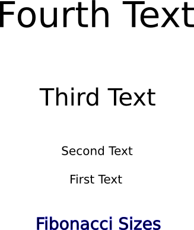
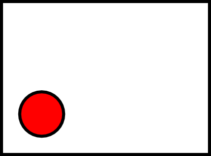

Using Proportions and Space
One of the most important things to think about when creating graphics
is if the proportions between the various components of your graphic
are correct.
The most important aspect of proportion is when you are working with a
graphic that shows an image of a 3-Dimensional scene (such as the
campsite example used above). When creating a 3-D scene in two
dimensions (on the computer screen, or paper) you as the artist need to
make sure that the correct proportions are used to accurately represent
the scene. Not accurately re-creating it will cause the people
viewing the work to sense that something isn't correct, often without
being able to actually identify it, which will lead them to not enjoy
the work. The best way to think about the proportion of 3-D works
is to understand that things look bigger when they are closer.
When
you are putting together a scene in Inkscape, it is easy to re-size the
objects you are working with. So use this ability to increase the
size of close objects and to shrink the size of distant objects, so
that they look natural.
If you look closely at the example of the campground we used above,
you'll notice that the trees are smaller in the distance and larger up
close. This was done by using the same tree object, and simply
changing the size to match what was needed.
Proportion is also used outside of 3-D scenes. When
you simply have text and graphics you need to be aware of the relative
sizes between the different objects. Also, the amount (and
location) of open space in the image is very important.
The most common rule used for determining the relative sizes of
objects and space is called the Golden Rule or Fibonacci
Sequence. This was developed by the mathematician from Piza,
Italy named
Fibonacci. His sequence is simply made where the next number in
the sequence is the sum of the previous two numbers. Starting
from 0:1 the start of the sequence is 0:1:1:2:3:5:8:13:21
etc. Over the years scientists and artists have found that
this sequence is everywhere in nature from snail shells to tree
leaves. In addition, the human eye has developed over thousands
of
years to readily identify this, and objects that are shown in that
sequence seem smooth and natural.
In this example on the left the sizes of the text and the spacing
between them both follow the 1:1:2:3 ratio. In this case the font
is 20:20:40:60 (from bottom to top) and the spacing is 46:92:138.
In the other
example,
on the right, the size of the font simply has 20 added each time
20:40:60:80. You may notice that the one on the left,
following the Fibonacci sequence, seems to follow a more natural
progression extending up whereas the one on the right seems more
abrupt.


The other thing that can be done with space is that it can be used to
draw the attention of the viewer in a certain direction.

Notice how all the empty space inside the box tends to draw your eye
down to the red circle? This can be even more useful in more
complicated images with many different objects in them.